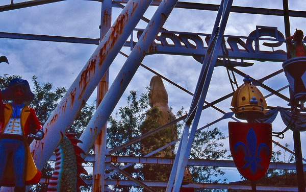
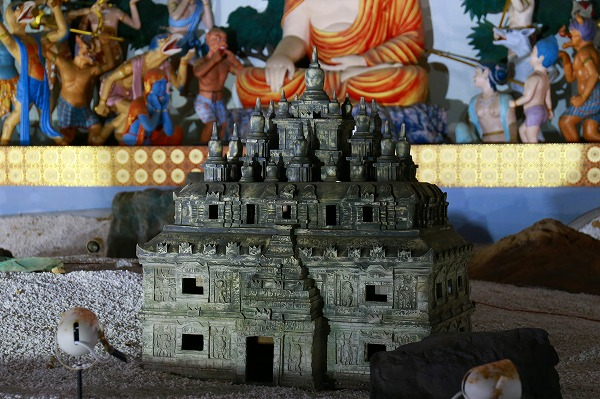
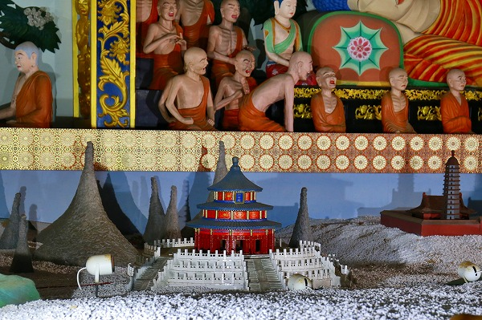
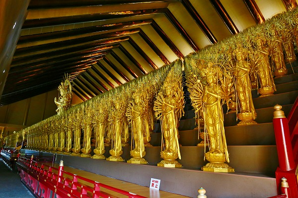
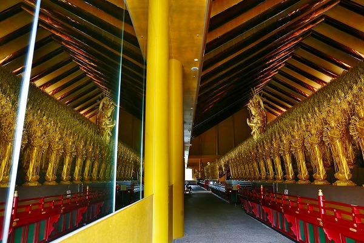
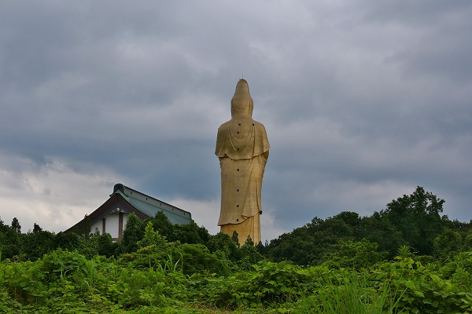

ハニベ巌窟院に続き、約20年ぶりに
ユートピア加賀の郷に行ってきた。
最初に基本情報入れといた方が良いですね。
ユートピア加賀の郷は関西のビル王となった加賀出身の人物が故郷のためにと私財を投げうって造り上げた
仏教テーマパークである。
開園は1987年。工費は280億円。
73ｍの大観音を中心に広大なレジャー施設を創り上げたのだ。
その後、温泉を掘り当て温泉施設やホテルも整備。
もうウハウハでイケイケな絵に描いたようなチンデレラストーリーなのである。
1998年に訪れた頃はまだその頃のウハウハイケイケな感じは残っており、訪れる人も何となく楽しそうだったよ。

隣には
遊園地も併設されており、大観音が娯楽のコンテンツのひとつとして成立していたのだよ。
私としてはこの大観音を建立した人物より遥かに金を稼いだ連中が大仏ひとつ建てずに碌な社会貢献もしないで私服だけをセコセコ肥すのは何とも不可解である。
逆に今の人って金儲けたら何するの？ＦＩＲＥ？賢明すぎて笑けるわー
…スミマセン。年甲斐もなく興奮してしまいました。
で、時は流れて2017年。
20年の間に色々あったみたいです。
大観音はとりあえず…あります。
それ以外は大変化です。
まず、所有者がコロコロ変わりました。
一時期、織田無道が住職になったり（その時点で終わってますね）、その後も色々あって現在は
観音院加賀寺というお寺になっています。
かつてあった温泉施設やホテルや土産物屋等は
ぜーんぶ廃墟。
昔来たときは温泉入って、マッサージとかまでしてもらったのにそのエリアはがっつし廃墟化してました。
つか駐車場とかも、ここ停めておいて大丈夫なの？バッテリーとか抜かれない？的な世紀末救世列伝っぽい雰囲気が漂ってました…。
ガラスがあちこち割られていて唯一のセキュリティシステムは仁王様の目力だけ、という有様。
大丈夫か？
んで、入口。
私が訪れた時は辛うじて係員の人がいたが、2023年時点では無人なこともあるようで。
で、入場料を払い、中へ。
門を潜るとメインの
加賀大観音が立っている。
巨大な金色の大観音、曇天によく似合います。
腕には赤子を抱いている。
この赤子だけでも奈良の大仏サイズだという。
凄いよねバブル。
淡路島の世界平和観音のように近隣に迷惑かけたらダメっすよね。へいへい。
今、日本には大仏を建てる権利さえも制限されてるようですよ。
建てるなら倒壊しても迷惑がかからない程度の敷地を用意しないとですね。
まあ、少なくともココはポッキリ倒壊しても周りに迷惑はかからないと思うけど。
本堂。
以前はここで唱えるお経がスピーカー越しに境内にガンガン響いていたように記憶していたが、今は誰もいなかった。

とにかくどこにも人がいない。

資金不足で
航空障害灯が点けられないで航空法違反の状態なのだという。
見るも無残な屋根。
穴が空いていて、もうこれはチョット…。
ちなみにかつては天辺まで上れた大観音も電気代が払えないのか、他の建物のコンセントからコードリールで引っ張って来て一階だけを照らしている有様。
上階への入場は禁止してなかったが、真っ暗で実質大型の照明を持ってこないと無理！な状態でした（2017年時点で）。
というわけで大観音登頂は諦め、次のアトラクションに向かうよ。
すっかり寂しくなってしまった観音像の裏手には大きな建物が聳えている。
そこには
釈迦の生涯をジオラマ仕立てにした展示があるのだ。
以前は撮影出来なかったような気がしたが、今はそれどころではないのだろう。
ノーガード状態になってました。
摩耶夫人の受胎から始まるお釈迦様のストーリー。
天上天下唯我独尊の図。
出奔の図。
出家。
まあ、色々な苦行をされている頃の姿。
そして悟りを開く。
悟りを開く仏様の両脇には奇妙な怪物が。
仏様の悟りを邪魔しているのだろうか。
そして説法。
そして入滅。
かくしてお釈迦様の一生を紹介している。
気になるのが手前のジオラマ。
インドから日本へ
仏教が伝来している様を紹介している。
インドから
ミャンマー。
タイ。
長安。

これは…何だっけ？
紫禁城？

天壇。
で、奈良。
釈迦の一生と仏教伝来が同じスケール感で見られるのが面白い。

で、お隣は加賀三十三間堂。
千体以上の観音像がズラリと並んでいる。
他のところはメンテ不足で残念なところが多いが、チョットここと釈迦の一生コーナーは凄いなー、と思わずマジで感心してしまう。
ヤバイ、段々テンション上がってきちゃった！
やっぱ好きだなー、こういうの。

鏡に映っているから千体観音も２倍！
世界一の大梵鐘。
梵鐘とはいえ下で鬼が支えているので多分打てないと思う。
瑠璃光殿。
三層の吹き抜けの中央に金色の五重塔が建っている。
いや、本当に凄いモノ造ったね。
この手の大観音がすっかり悪者にされてしまう昨今だが、やっぱり私は好きだな。
いや、好きなだけじゃどうしようもないのはよ～く判っているのだが。
訪問時は天空聖陵加賀の郷と呼ばれていた。
後で知ったが、この頃（2017年）はよろこび家族の和という元法の華三法行の人達が取得していたそうな。
入口の土産物屋にあった観音像。
おじさんにあと何体あるか聞いたら3体だけだ、というので
全部買いました！
持って帰るのが結構面倒だったぜ。
一体は友達にプレゼント。もう一体は自分用。もう一体は割れちゃった。

このお寺、現在（2023年）は創建当時の観音院加賀寺を名乗っている。
建築不動産関係の会社が買い取ったそうな。
今後の行き先は解体存続含めてまだ判らないようだ。
淡路島の平和観音亡き今、日本で一番ヤバイ大観音、かも知れない。
以前の活気は全くなくなってしまったけど、
今が一番香ばしい感じにはなっているのは間違いない。
その手のテイストが好きな方は敢えて今、ここに行くのもアリかもしれませんぜ。